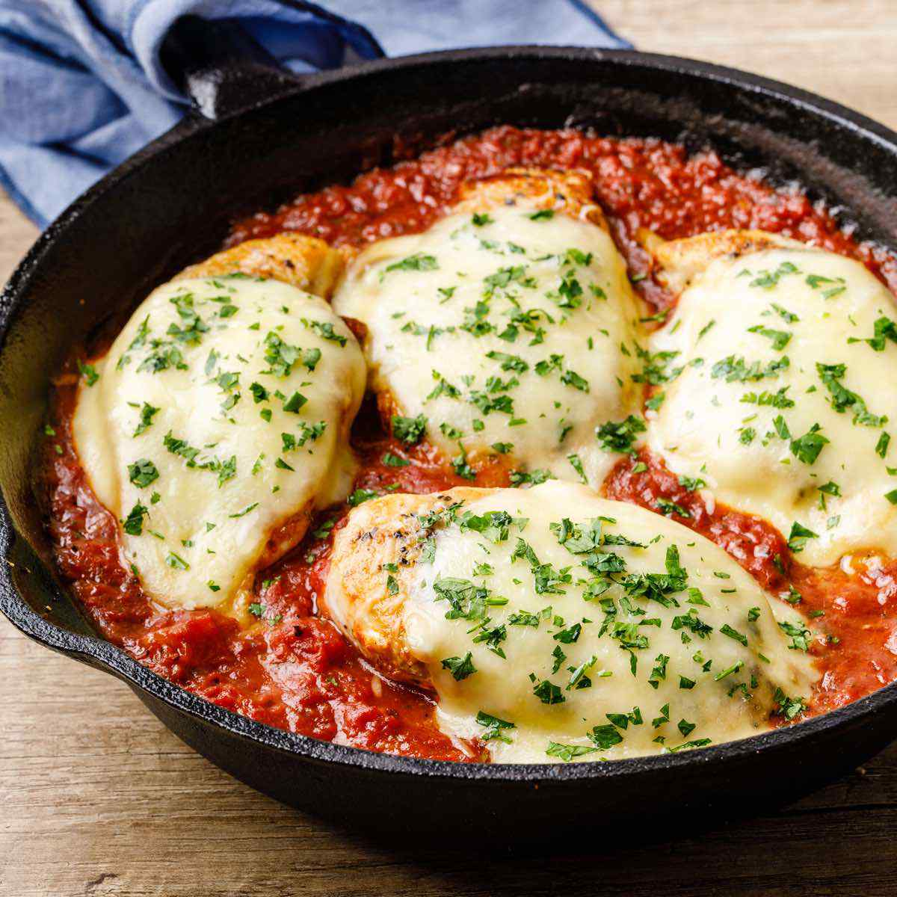

Delicious Keto Parmigiana Chicken
Home
Love Italian food but are afraid of carbs? Problem solved!
Follow this simple yet delicious recipe that can be made in under 30 minutes.

Ingredients:
- 300g of chicken breast
- 100g of buffala mozzarela
- 100g parmesan cheese
- Low-carb pomodoro sauce
- 50g of Almond flour
- 2 eggs
- Salt and black pepper
- Olive oil
Preparing:
- Cut the chicken breast in slices and season with salt and black pepper
- Mix the 2 eggs in a bowl
- Mix the chicken slices with the eggs then with the almond flour
- Fry the chicken until it is golden brown
- Place it in a baking tray and add pomodoro sauce, buffala mozzarela and parmesan cheese on top
- Put it in a pre-heaten oven for 10 minutes and it is done!